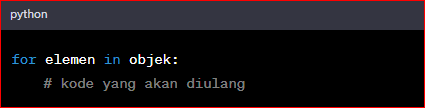
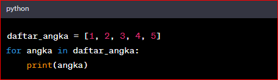
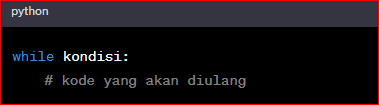
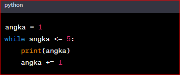

Membuat suatu program tidak akan lepas dari perulangan atau looping. Misalkan saja kita ingin membuat minuman teh hangat untuk 10 tamu, tentunya kita akan mengulang proses membuat teh hangat sebanyak 10 kali. Inilah yang disebut dengan perulangan.
Untuk lebih jelasnya perhatikan algoritma berikut :
Mulai
Nilai x = 15
Selama x > 10 maka kerjakan langkah 5 sampai 6
Tampilkan nilai = x,
Nilai x = x - 1
Selesai
Algoritma diatas menunjukkan adanya perulangan, yaitu akan diulang selama nilai x masih kurang dari 10 dan akan berhenti jika nilai x sama dengan 10. Sekarang perhatikan algoritma perulangan yang lain :
Mulai
Nilai x = 15
Tampilkan nilai = x,
Nilai x = x - 1
Selama x > 10 maka kembali ke langkah 3
Selesai
Algoritma ini juga menunjukkan adanya perulangan, yang mana akan mengulang langkah ketika nilai x masih kurang dari 10. Lalu apakah bedanya??
Mari kita ulas lebih mendetail, jika kita jalankan algoritma diatas, maka sistem akan memberikan hasil seperti berikut :
nilai = 15, nilai = 14, nilai = 13, nilai = 12, nilai = 11
Jika diperhatikan hasilnya maka terlihat sama saja, namun secara proses berbeda, algoritma pertama akan melakukan cek terlebih dahulu kemudian memprosesnya sedangkan algoritma kedua akan memproses dulu baru melakukan cek. Apa yang di cek? Sistem akan melakukan cek pada kondisi yang diberikan, yang pada kasus ini adalah ketika x bernilai sama dengan 10.
Untuk diagram alir (flowchart) dari algoritma diatas adalah:
Gambar 1. Flowchart Perulangan For
Gambar diatas menunjukkan bahwa pengecekan perulangan berada sebelum proses
Gambar 2. Flowchart Perulangan Do While
Gambar diatas menunjukkan bahwa pengecekan perulangan berada setelah proses.
Pengaplikasian Perulangan dalam Program (Code)
Perulangan dalam Python adalah salah satu fitur penting yang memungkinkan kita untuk menjalankan serangkaian kode berulang kali. Dengan menggunakan perulangan, kita dapat mengotomatisasi tugas yang berulang atau memproses rangkaian data secara efisien. Di Python, terdapat dua jenis perulangan utama: perulangan `for` dan perulangan `while`.
Berikut Video Pembelajaran tentang Perulangan for dalam python
Perulangan `for`:
Perulangan `for` digunakan ketika kita sudah mengetahui berapa kali perulangan akan dilakukan atau ketika kita ingin mengulangi serangkaian elemen yang ada dalam sebuah objek seperti daftar (list), string, atau tuple. Sintaks dasar perulangan `for` adalah sebagai berikut:

Contoh penggunaan perulangan `for`:

Di sini, perulangan `for` akan mengulangi kode di dalam blok perulangan untuk setiap elemen dalam daftar `daftar_angka`.
Berikut Video Pembelajaran tentang Perulangan while dalam python
Perulangan `while`:
Perulangan `while` digunakan ketika kita tidak tahu berapa kali perulangan akan dilakukan dan ingin menjalankan serangkaian kode selama kondisi tertentu terpenuhi. Sintaks dasar perulangan `while` adalah sebagai berikut:

Contoh penggunaan perulangan `while`:

Di sini, perulangan `while` akan terus mengulangi kode di dalam blok perulangan selama kondisi `angka <= 5` terpenuhi.
Selama menjalankan perulangan, kita dapat menggunakan beberapa pernyataan kontrol untuk mengontrol alur perulangan, seperti `break` untuk menghentikan perulangan, dan `continue` untuk melanjutkan ke iterasi berikutnya tanpa menjalankan kode yang tersisa dalam blok perulangan.
Perulangan adalah alat yang sangat berguna dalam pemrograman Python, dan dengan memahami penggunaan perulangan `for` dan `while`, kita dapat mengotomatisasi tugas, mengolah data, atau mengulang instruksi berdasarkan kondisi yang kita tentukan.
 Log Out
Log Out